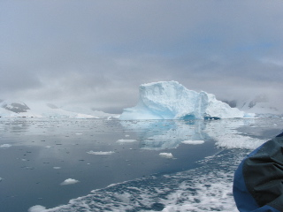

Day 7 &mdash 2003/01/31
Showed up here the night before. We were way early. One of the other cruise ships was also here, and they sent a message to our captain and expedition leader to hide our boat. Since they were going to do the landing at 4:00, then leave. Was just funny to hear about that.
First landing: Paradise Bay
Another empty base, but on the actual continent this time.
Took a panoramic from the top of the hill here too.
Climbed up a high hill, and slide down on my butt. Note that gortex
slides well on snow. ^_^
We then went out on a cruise to check out the ice fronts. There is an amazing sound of the constant crackles and pops of the ice bits melting in the water.

Then the best bit, this iceberg we were near made a loud crack and started to roll! The boat driver yelled for everyone to get low, and we bolted away and watched it rock back and forth. Guide explained that if a big chunk had broken off and the ice berg actually rolled over, there could have been some big waves.
I tried taking movies of the iceberg rocking, but it moves so slow, that you can hardly tell anthing is happening. Kind of disappointing. But watching it happen and being as close as we were was amazing. (No picture or movie could capture that anyways.)
Second Landing: Neko Harbor
Whales. That is all I can say. There was a land bit, but it was so extremily shadowed by the quick zodiac excursion. First, right at the end of lunch, some more Minke whales were spotted, and these came right beside the boat. Then when we left out on the zodiacs, we went out to where the whales had gone. Then they played around the zodiacs. You could see them right under the surface of the water. And they would break the surface on one side then the other. It was amazing, completely and utterly amazing.